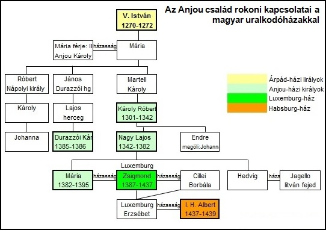
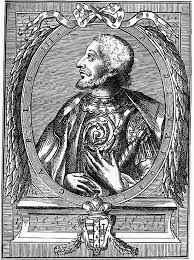
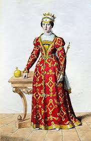

Anjou uralkódóház

-Az Anjou-ház mindig a Franciaország északnyugati részén elterülő Anjou tartományt birtokló család elnevezése.
-Öt különböző Anjou-ház fordult elő a történelemben, melyek nem mindig egymás öröksége révén nyerték el az Anjou grófjának
vagy hercegének a címét, bár az uralkodóházak keveredése miatt kimutatható a közvetlen genealógiai kapcsolat közöttük.
- A magyar Anjou-ház (1301–1399) a harmadik Anjou-házból származott.
-A magyar történelem Anjou-kornak nevezi azt a közel százéves korszakot, mikor a harmadik Anjou-ház királyai uralkodtak az országban.
-Károly nápolyi és szicíliai király és V. István magyar király között kötött Árpád–Anjou kettős házasság értelmében Károly fia,
a későbbi II. Károly nápolyi király feleségül vette István leányát Mária hercegnőt, valamint István fia,
a később IV. László magyar király feleségül vette Károly leányát, Izabella hercegnőt.
- A harmadik Anjou-házból a magyar trónra igényt elsőként a leányágon rokon Martell Károly calabriai herceg tartott.
1295-ben bekövetkezett halálát követően trónigényét fia, Károly Róbert vitte tovább,
akit három koronázást követően végül ténylegesen is az ország királyává iktattak.
- Károly Róbert hosszas uralkodásával kialakult belső stabilitást és jólétet fia, Nagy Lajos vitte tovább,
aki 1370-ben a lengyel koronát is megszerezte.
Nagy Lajos fiúutód nélkül való távozását követően országai irányítását leányai között osztotta fel,
a magyar trón Ifjabb Mária hercegnőre, míg a lengyel trón Hedvig hercegnőre szállt.
-A harmadik Anjou-ház magyar királyokat adó ága végül velük halt ki Mária 1395-ös,
majd Hedvig 1399-es halálával, amely egyúttal az Árpád-ház leányági kihalását is jelentette.
V. István(1239. október 18. – 1272. augusztus 6.) Magyarország királya 1270 és 1272 között, IV. Béla király és Laszkarisz Mária királyné elsőszülött fia. 1246-tól 1257-ig szlavón herceg, majd erdélyi herceg (dux Transsilvanus), 1258 és 1260 között stájer herceg (dux Stiriae). 1260-tól ismét erdélyi herceg.
II. Károly (ragadványnevén Kis Károly) (1345 – 1386. február 24.) Anjou-házi magyar és – III. Károly néven – nápolyi király és akháj fejedelem. Nápolyban 1381. június 2-ától, Magyarországon 1385. december 31-étől haláláig uralkodott. A Parvus (Kis) melléknevet termete miatt kapta, Itáliában a Pacis, della Pace (Békés) melléknévvel is emlegették.

Árpád-házi Mária vagy Magyarországi Mária (1257 – Nápoly, 1323. március 25.),
az Árpád-házból származó magyar királyi hercegnő, V. István magyar király és Kun Erzsébet leánya, aki 1270-től Sánta Károly, Anjou hercegének (később Nápoly királyának) feleségeként nápolyi királyné.
IV. (Kun) László (1262. augusztus 5. – 1290. július 10.) Árpád-házi magyar király 1272 és 1290 között. Apja V. István király, anyja Erzsébet kun hercegnő volt. Kun László okleveleiben magát III. Lászlónak nevezte, mivel II. Lászlót, a III. István idején fellépő ellenkirályt ekkor nem ismerték el törvényes uralkodónak.
I. Lajos a Capeting–Anjou-házból származó magyar királyi herceg, Magyarország és Horvátország királya 1342-től, és Lengyelország királya 1370-től haláláig, I. Károly magyar király és Łokietek Erzsébet királyné harmadik fia.
Anjou Hedvig (ismert még mint Magyarországi vagy Lengyelországi Hedvig, (Buda, Magyar Királyság, 1374. február 18. – Krakkó, Lengyel Királyság, 1399. július 17.),
a Capeting–Anjou-házból származó magyar királyi hercegnő, I. Lajos magyar király és Kotromanić Erzsébet királyné legifjabb leánya,
aki apja 1382-es halálát követően Lengyelország királynője 1399-ben bekövetkezett haláláig.
V. István: wikipedia
II. Károly: wikipedia
Mária hercegnő: wikipedia
IV. László: wikipedia
Nagy Lajos: wikipedia
Anjou Hedvig: wikipedia
{kind=link}